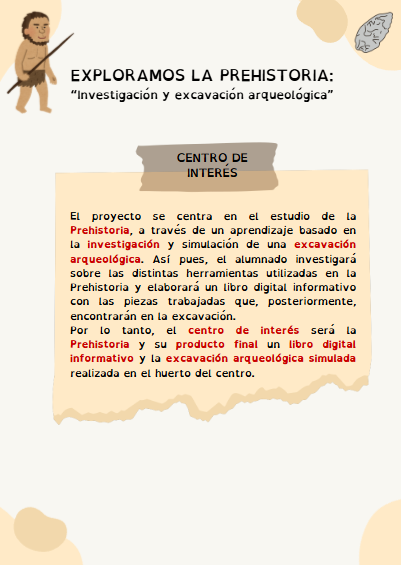

Situación de Aprendizaje
Este proyecto se enmarca dentro de una Situación de Aprendizaje centrada en el estudio de la Prehistoria, concretamente en el Paleolítico, a través de una metodología activa basada en la investigación y el aprendizaje por proyectos. En el siguiente enlace se puede consultar de forma detallada la descripción completa de la SdA, donde se recogen los objetivos, el contexto y el producto final que deberá elaborar el alumnado: Guía didáctica "Exploramos la Prehistoria"

Laura del Pilar Martín Rey. SDA. "Exploramos la Prehistoria". Creative Commons CC-BY-NC-SACriterios de evaluación
A continuación, se incluyen los criterios de evaluación seleccionados para la materia de Geografía e Historia. Estos criterios se encuentran vinculados a las diferentes tareas planteadas en el proyecto, garantizando así una evaluación coherente y competencial.
Del mismo modo, se presenta la tabla de tareas secuenciadas, donde se especifican las actividades que realizará el alumnado, el tiempo estimado, el tipo de agrupamiento y las herramientas digitales utilizadas. Esta organización facilita la planificación docente y permite tener una visión global del desarrollo del proyecto.

Laura del Pilar Martín Rey. Criterios de evaluación. Creative Commons CC-BY-NC-SA
Recomendaciones
En cuanto a las recomendaciones, se sugiere adaptar el ritmo de trabajo a las características del alumnado, fomentar el aprendizaje cooperativo y promover el uso responsable, crítico y seguro de las tecnologías digitales. Asimismo, es conveniente prever posibles dificultades técnicas y contar con alternativas que garanticen la continuidad del proceso de enseñanza-aprendizaje.
Por último, este recurso está diseñado para ser utilizado como una guía tanto para el profesorado como para el alumnado. Se recomienda presentar el proyecto de forma motivadora, acompañar al alumnado durante las diferentes fases y favorecer la reflexión sobre su propio aprendizaje. De este modo, se potencia un aprendizaje significativo, activo e inclusivo.